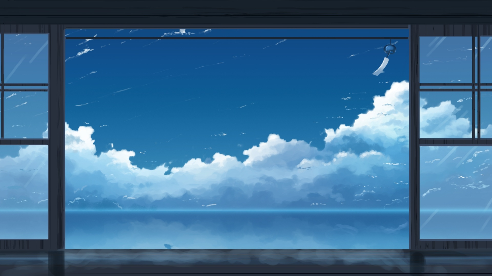
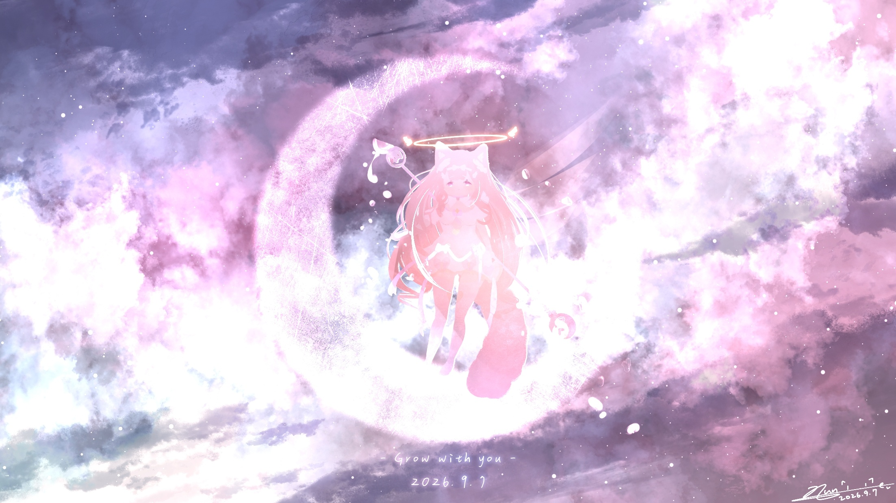

日々2026.11.015 min
文章标题写在这里
そらの話

第一段写在这里。首字会自动放大、变成粉色，这是 CSS 做的，你不用管。
第二段正常写就行。换行在 HTML 里不会生效，想分段就再写一个 <p> 标签。
小标题
小标题下面的正文。
「这一句是第一个人说的。」
「这一句是第二个人说的。」
「这一句是第二个人说的。」
注：这里适合写一点补充说明、吐槽、或者后记。
「有些句子不是为了推动剧情，只是为了让某个人被记住。」


另一个小标题
继续写。文章长短都无所谓，模板只是给你几个可用的积木。